Du lernst hier eines der wichtigsten Prinzipien der Elektrodynamik: Eine Änderung des magnetischen Flusses kann eine elektrische Spannung erzeugen. Damit verstehst du Generatoren, Transformatoren, Wirbelstrombremsen, Induktionskochfelder und induktives Laden.
Induktion ist zunächst ein experimentelles Phänomen. Du beobachtest eine Spannung, obwohl keine Batterie angeschlossen ist. Die Erklärung liegt nicht in einem „versteckten Strom“, sondern in der Änderung des magnetischen Flusses.
Du startest mit drei Grundversuchen. Danach untersuchst du getrennt, was bei einer bewegten Leiterschaukel, einer veränderten Schleifenfläche und einem zeitlich veränderlichen Magnetfeld passiert. Anschließend führst du diese Beobachtungen mit dem magnetischen Fluss und dem Faraday-Gesetz zusammen. Das Lenz'sche Gesetz erklärt die Richtung, bevor du Wirbelströme, Wechselspannung und Selbstinduktion anwendest.
Grundversuche, Flussänderung, Faraday- und Lenz-Regel, qualitative Anwendungen, Selbstinduktion und Spulenenergie bilden den gemeinsamen Kern.
Lorentzkraft-Herleitung, Momentanwerte mit Ableitungen, Produktregel, Abiturdiagramme und die quantitative sinusförmige Wechselspannung sind deutlich markiert.
Du beobachtest die Versuche, formulierst die Bedingungen für Induktion und deutest die Richtung qualitativ. Die vollständige Rechnung am bewegten Leiter folgt anschließend als LF-only-Vertiefung.
Bei der Leiterschaukel hängt ein gerader Leiter beweglich im homogenen Feld eines Hufeisenmagneten. Ein empfindlicher Spannungsmesser ist mit seinen Enden verbunden. Bewegst du den Leiter so, dass Bewegungsrichtung, Leiter und Magnetfeld jeweils senkrecht zueinander stehen, zeigt das Messgerät eine Spannung an. Diese ohne Spannungsquelle entstandene Spannung heißt Induktionsspannung \(U_\mathrm{ind}\).
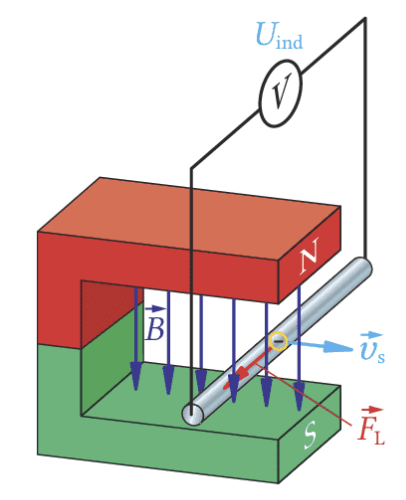
Je schneller sich der Leiter bewegt und je größer die magnetische Flussdichte \(B\) ist, desto größer ist der Betrag der gemessenen Spannung. Bei schräger Bewegung ist die Spannung kleiner. Bewegt sich der Leiter parallel zu den Feldlinien, zeigt das Messgerät keine Spannung an.
Für die Induktion ist deshalb nicht die gesamte Geschwindigkeit entscheidend, sondern nur ihr senkrechter Anteil \(v_\perp\). Ein Umkehren der Bewegungsrichtung oder der Magnetfeldrichtung vertauscht die Pole und damit das Vorzeichen der gemessenen Spannung.
Merke: Ein Leiter kann durch Bewegung im Magnetfeld zu einer Spannungsquelle werden.
Bewegst du einen Stabmagneten relativ zu einer ruhenden Spule, schlägt das Messgerät nur während der Bewegung aus. Hältst du beide fest, verschwindet die Spannung. Das Gleiche geschieht, wenn der Magnet ruht und die Spule bewegt wird: Entscheidend ist die Änderung des Magnetfeldes in der Umgebung der Spule.
Auch zwei ruhende Spulen können Induktion zeigen. Wird der Strom in der ersten Spule ein- oder ausgeschaltet, baut sich ihr Magnetfeld auf oder ab. In der zweiten Spule entsteht während dieser Änderung eine Spannung. Ist der Strom konstant, bleibt auch das Magnetfeld konstant und die Induktionsspannung ist null.
Induktion tritt auf, wenn ein Leiter passend durch ein Magnetfeld bewegt wird oder wenn sich das Magnetfeld beziehungsweise die vom Feld durchsetzte Fläche einer Spule ändert. Ein zeitlich unveränderter Zustand erzeugt keine dauerhafte Induktionsspannung.
Ein Stabmagnet fällt im Schwerefeld durch eine Spule. An den Spulenenden wird eine Induktionsspannung gemessen.
Die qualitative Beobachtung der Leiterschaukel ist gemeinsamer Stoff. Die Herleitung über die Lorentzkraft, \(U_\mathrm{ind}=Bv_\perp d\) und die folgenden Rechnungen gehören in die zusätzlichen LF-Stunden.
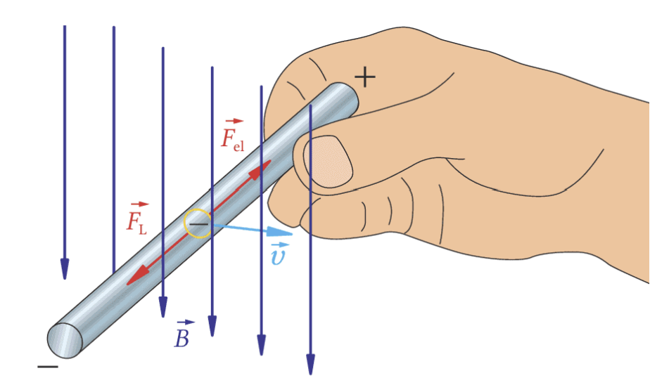
Die freien Elektronen bewegen sich gemeinsam mit dem Leiter durch das Magnetfeld. Auf sie wirkt die Lorentzkraft. Sie verschiebt Elektronen zu einem Ende des Leiters; dort entsteht ein Minuspol, am anderen Ende durch Elektronenmangel ein Pluspol.
Die getrennten Ladungen erzeugen im Stab ein elektrisches Feld. Dieses übt auf weitere Elektronen eine elektrische Kraft aus, die der Lorentzkraft entgegengerichtet ist. Die Ladungstrennung endet, sobald beide Kräfte betragsgleich sind. Dann liegt zwischen den Leiterenden eine konstante Spannung an.
Nur die Geschwindigkeitskomponente \(v_\perp\) senkrecht zu den Magnetfeldlinien erzeugt eine Lorentzkraft längs des Leiters.
\(d\) ist die Leiterlänge, über die Ladungen getrennt werden. Für eine senkrechte Bewegung gilt \(v_\perp=v\). Die Formel gibt zunächst den Betrag an; die Polung folgt aus der Drei-Finger-Regel.
Ein Leiter der Länge \(d=5{,}0\,\mathrm{cm}\) wird mit \(v=20\,\mathrm{cm/s}\) orthogonal zu den Feldlinien durch ein homogenes Magnetfeld mit \(B=0{,}10\,\mathrm T\) bewegt.
Du erklärst, wann eine Leiterschleife eine Induktionsspannung liefert, und deutest die vier Bewegungsphasen. Die quantitative Herleitung aus Lorentzkräften und Flächenänderungsrate ist LF-only.
Eine Leiterschleife ist eine Spule mit nur einer Windung. Im Versuch wird sie mit konstanter Geschwindigkeit in ein räumlich begrenztes homogenes Magnetfeld hineinbewegt, vollständig darin bewegt und wieder herausgezogen. Das Spannungsmessgerät zeigt nur dann eine Spannung, wenn sich die vom Magnetfeld durchsetzte Fläche \(A\) ändert.
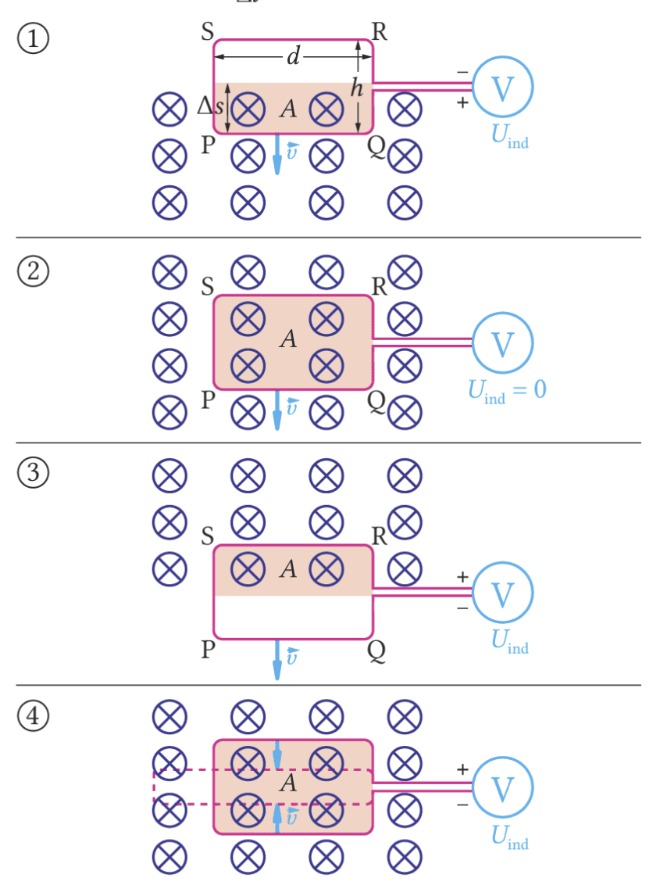
1. Eintauchen: Die durchsetzte Fläche wächst. Am vorderen Leiterstück werden Ladungen getrennt; das Messgerät schlägt aus.
2. Vollständig im Feld: Die durchsetzte Fläche bleibt konstant. Die in gegenüberliegenden Leiterstücken erzeugten Teilspannungen sind entgegengesetzt und heben sich auf.
3. Austreten: Die durchsetzte Fläche nimmt ab. Die Polung ist gegenüber dem Eintauchen umgekehrt.
4. Verformen: Auch eine ruhende Schleife liefert eine Spannung, wenn sie im Magnetfeld zusammengedrückt und dadurch ihre Fläche verändert wird.
Eine bloße Bewegung der Leiterschleife reicht nicht. Entscheidend ist, ob sich die vom Magnetfeld senkrecht durchsetzte Fläche zeitlich ändert.
Beim Eintauchen ändert sich die Fläche in der Zeit \(\Delta t\) um \(\Delta A=d\Delta s\). Mit \(v=\Delta s/\Delta t\) gilt \(\Delta A/\Delta t=dv\). Die Formel des bewegten Leiters wird damit zur Flächenform des Induktionsgesetzes.
Für eine Windung ist \(n=1\). Das Vorzeichen hängt von Flächenorientierung, Bewegung und Anschluss des Messgeräts ab; die Lenz'sche Regel legt die physikalische Gegenwirkung fest.
Die Ableitung beschreibt, wie schnell sich die wirksame Fläche genau im Zeitpunkt \(t\) ändert.
Bei einer Spule wird in jeder der \(n\) Windungen eine Teilspannung induziert. Weil die Windungen in Reihe liegen, addieren sich diese Teilspannungen. Deshalb steht die Windungszahl als Faktor in beiden Formeln.
Eine rechteckige Leiterschleife ist \(h=6{,}0\,\mathrm{cm}\) hoch und \(d=8{,}0\,\mathrm{cm}\) breit. Sie wird in \(\Delta t=0{,}20\,\mathrm s\) vollständig in ein Magnetfeld mit \(B=50\,\mathrm{mT}\) bewegt.
Eine Leiterschleife mit \(A_1=50\,\mathrm{cm^2}\) steht senkrecht zu den Feldlinien eines Magnetfelds mit \(B=0{,}20\,\mathrm T\). In \(0{,}10\,\mathrm s\) wird sie auf \(A_2=5{,}0\,\mathrm{cm^2}\) zusammengedrückt.
Teil a eignet sich für beide Kurse. Die quantitative Flächen- und Winkelrechnung ist als LF-Vertiefung vorgesehen.
Die Feldlinien müssen eine Schleifenfläche nicht senkrecht durchsetzen. Wird die Schleife gedreht, zählt nur ihre Projektion senkrecht zu den Feldlinien. Diese Projektion heißt wirksame Fläche \(A_\perp\) beziehungsweise \(A_S\).
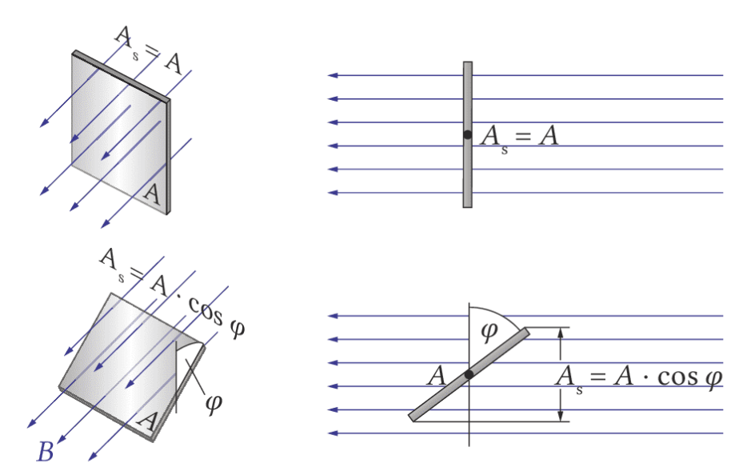
Steht die Fläche senkrecht zu den Feldlinien, wird sie vollständig durchsetzt. Liegt sie parallel zu den Feldlinien, durchsetzt keine Feldlinie die Fläche. Beim Drehen zwischen diesen Stellungen ändert sich die wirksame Fläche fortlaufend und es wird eine Spannung induziert.
Die quantitative Projektion der Schleifenfläche gehört in die LF-Zusatzstunden.
φ ist hier der Winkel zwischen Flächennormale und Magnetfeldrichtung. Achte bei anderen Darstellungen darauf, wie der Winkel definiert ist.
Die Formel gilt für die mittlere Spannung, wenn die Schleife in der Zeit \(\Delta t\) aus dem Winkel \(\varphi\) in die Stellung mit maximal wirksamer Fläche gedreht wird.
Eine Spannung kann auch entstehen, obwohl die Induktionsspule ruht und ihre Fläche konstant bleibt. Dazu muss sich die magnetische Flussdichte in ihrer Umgebung zeitlich ändern. Im Versuch liegt eine kleine Induktionsspule im Inneren einer felderzeugenden Spule. Steigt deren Strom linear, steigt auch \(B\) linear. Während dieser Änderung misst man an der Induktionsspule eine konstante Spannung. Sobald \(B\) konstant ist, fällt \(U_\mathrm{ind}\) auf null.
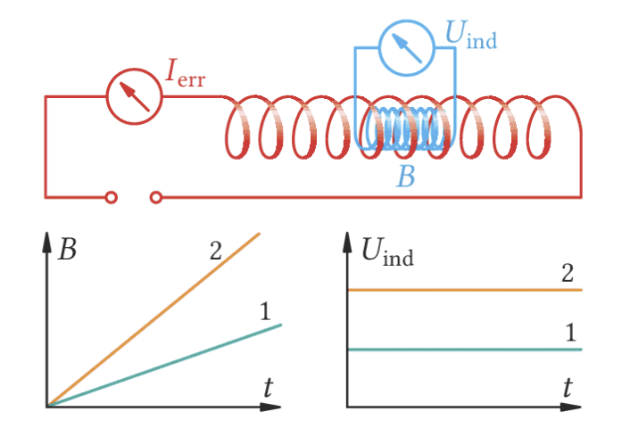
Das Phänomen lässt sich nicht durch eine Lorentzkraft auf gemeinsam mit einem Leiter bewegte Elektronen erklären: Der Leiter ruht. Die allgemeinere Erklärung erfolgt über ein elektrisches Wirbelfeld und die Änderung des magnetischen Flusses.
Mehr Windungen, eine größere wirksame Fläche oder eine schnellere Änderung von \(B\) vergrößern die Induktionsspannung.
Für einen nicht linearen B-t-Verlauf wird die momentane Änderungsrate verwendet.
Eine Induktionsspule besitzt \(n=300\) Windungen und \(A_\perp=13{,}2\,\mathrm{cm^2}\). Die Flussdichte nimmt in \(5{,}0\,\mathrm{ms}\) linear von \(0\) auf \(0{,}61\,\mathrm{mT}\) zu.
Der experimentelle Wert von etwa 47 mV stimmt im Rahmen der Messgenauigkeit mit der Berechnung überein.
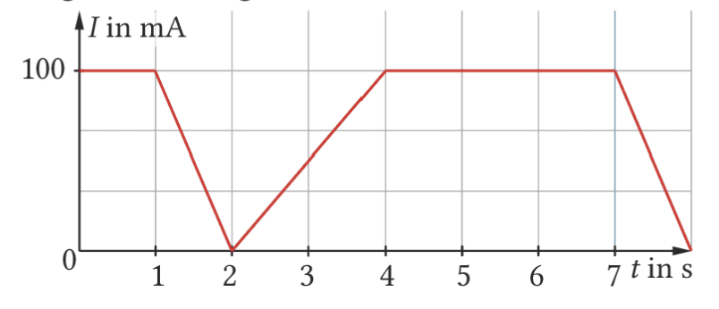
In einer Feldspule mit \(N=16000\) Windungen und \(l=0{,}48\,\mathrm m\) liegt eine Induktionsspule mit \(n=1000\) Windungen und \(A_\perp=28\,\mathrm{cm^2}\). Die Achsen sind parallel. Das Diagramm zeigt \(I(t)\) der Feldspule.
Hier kombinierst du \(B=\mu_0(N/l)I\) mit dem Induktionsgesetz und wertest ein abschnittsweise lineares Diagramm aus.
Bei der Flächenänderung bleibt \(B\) konstant und \(A_\perp\) ändert sich. Bei der Flussdichteänderung bleibt \(A_\perp\) konstant und \(B\) ändert sich. Michael Faraday erkannte die gemeinsame Größe hinter beiden Vorgängen: den magnetischen Fluss.
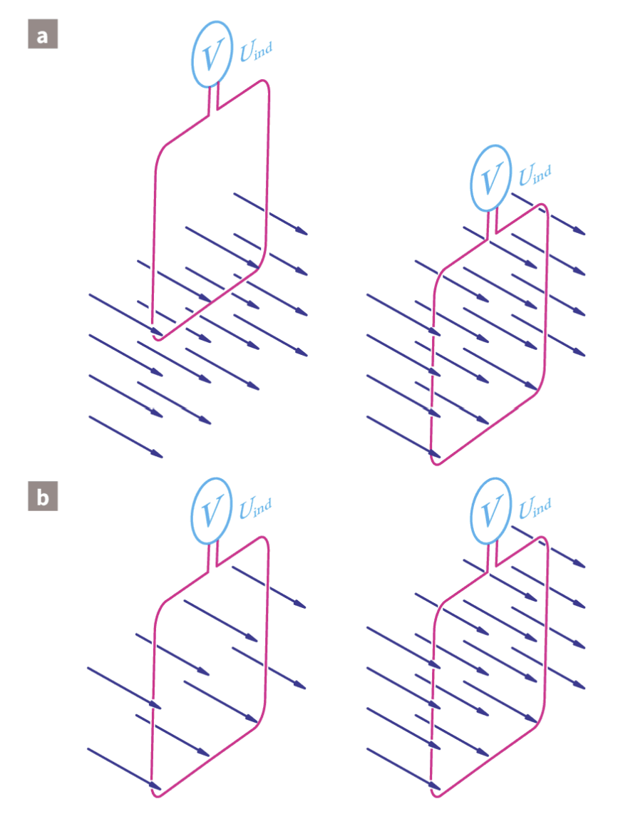
Das Feldlinienbild ist nur ein Modell, macht aber die gemeinsame Idee sichtbar: In beiden Fällen verändert sich die Zahl der Feldlinien, die die Leiterschleife durchsetzen. Ein großer Fluss kann dennoch ohne Induktion bestehen. Erst seine zeitliche Änderung erzeugt eine Spannung.
Der magnetische Fluss verbindet Feldstärke, Fläche und Orientierung.
Der Betrag wächst mit der Windungszahl und mit der Geschwindigkeit der Flussänderung. Das Minuszeichen beschreibt die Gegenwirkung nach Lenz; das am Messgerät angezeigte Vorzeichen hängt zusätzlich von der festgelegten Flächen- und Anschlussorientierung ab.
Die Ableitung des Flusses und die gleichzeitige Änderung von \(B(t)\) und \(A_\perp(t)\) werden in den LF-Zusatzstunden behandelt.
Wenn sich \(B(t)\) und \(A_\perp(t)\) gleichzeitig ändern, gilt mit der Produktregel:
Bewegungsinduktion und Induktion durch ein veränderliches Magnetfeld sind physikalisch verschieden, werden aber durch dieselbe Flussgleichung beschrieben. Das Gesetz gilt auch für inhomogene Felder, wenn der Fluss passend über die Fläche bestimmt wird.
Die induzierte Wirkung ist stets so gerichtet, dass sie der verursachenden Änderung entgegenwirkt. Nimmt der äußere Fluss zu, erzeugt der Induktionsstrom ein Magnetfeld gegen diese Zunahme. Nimmt der äußere Fluss ab, versucht der Induktionsstrom den bisherigen Fluss aufrechtzuerhalten.
Das ist eine Folge der Energieerhaltung. Würde die induzierte Wirkung die verursachende Änderung verstärken, könnte das System ohne Energiezufuhr immer mehr elektrische Energie erzeugen.
Faraday beschreibt, wie groß die Induktionsspannung ist. Lenz beschreibt ihre Richtung. Das Minuszeichen im Induktionsgesetz fasst diese Gegenwirkung zusammen.
Du erklärst die Gegenwirkung eines Induktionsstroms mit der Energieerhaltung. Die vollständige Energiebilanz ist als LF-only-Vertiefung markiert.
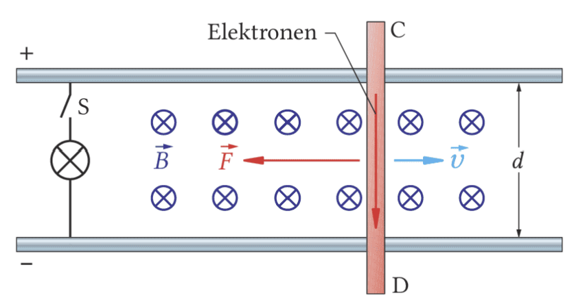
Ein leitender Stab liegt reibungsarm auf zwei Metallschienen. Er wird in einem homogenen Magnetfeld nach rechts angestoßen. Die Elektronen bewegen sich mit dem Stab durch das Feld und erfahren eine Lorentzkraft von (C) nach (D). Dadurch entsteht zwischen den Stabenden eine Induktionsspannung.
Schalter offen: Elektronen werden nur so lange verschoben, bis sich Lorentzkraft und elektrische Gegenkraft ausgleichen. Danach gilt (I=0), die Lampe bleibt dunkel und der Stab bewegt sich idealisiert mit konstanter Geschwindigkeit weiter.
Schalter geschlossen: Es fließt dauerhaft Strom. Die Lampe leuchtet und der stromdurchflossene Stab erfährt eine magnetische Kraft entgegen seiner Bewegung. Er wird langsamer.
Die Induktionsspannung ist so gepolt, dass ein durch sie hervorgerufener Strom der Ursache der Induktion entgegenwirkt.
Diese Gegenwirkung ist keine zusätzliche Regel ohne Begründung, sondern folgt aus der Energieerhaltung. Würde die magnetische Kraft den Stab weiter beschleunigen, stiegen Geschwindigkeit, Induktionsspannung und Stromstärke immer weiter. Das System könnte ohne Energiezufuhr beliebig viel elektrische Energie liefern. Ein solches Perpetuum mobile ist unmöglich.
In einer kurzen Zeitspanne \(\Delta t\) dürfen \(v\), \(U_\mathrm{ind}\) und \(I\) näherungsweise als konstant gelten.
Die Bewegungsenergie des Stabs wird über die Induktion in elektrische Energie und schließlich in Licht und innere Energie umgewandelt.
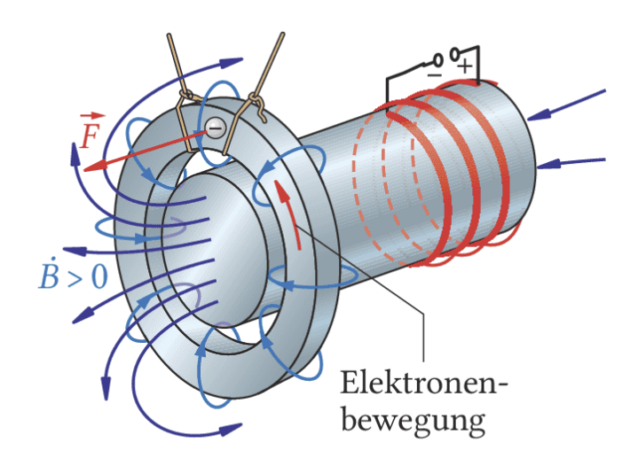
Ein Aluminiumring hängt bifilar über dem Eisenkern einer Spule. Beim Schließen des Schalters baut sich das Magnetfeld der Spule auf. Der zunehmende magnetische Fluss erzeugt im Ring einen Induktionsstrom. Dessen Magnetfeld ist der Zunahme des äußeren Feldes entgegengerichtet: Der Ring wird abgestoßen.
Beim Öffnen des Schalters nimmt der äußere Fluss ab. Nun versucht der Induktionsstrom, das bisherige Magnetfeld aufrechtzuerhalten. Seine Richtung kehrt sich um und der Ring wird kurzzeitig angezogen.
Ist der Ring geschlitzt, werden Ladungen zwar kurz verschoben, aber es kann kein geschlossener Ringstrom fließen. Dann entsteht keine nennenswerte magnetische Kraft auf den Ring.
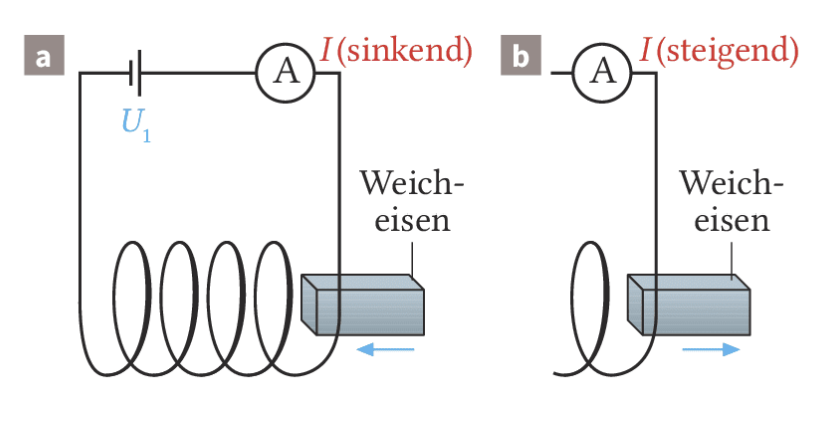
Wird ein Weicheisenkern in eine stromdurchflossene Spule geschoben, wächst der magnetische Fluss. Die dabei induzierte Spannung wirkt der Batteriespannung entgegen; die Stromstärke sinkt kurzzeitig. Beim Herausziehen nimmt der Fluss ab. Die Induktionsspannung unterstützt nun kurzzeitig die äußere Spannung und die Stromstärke steigt.
Das Vorzeichen ist nur zusammen mit einer vorher festgelegten positiven Flächen- und Umlaufrichtung eindeutig. Physikalisch entscheidend bleibt die Gegenwirkung gegen die Flussänderung.
Bei festgelegter Orientierung führt eine positive Flussänderungsrate zu einer negativen Induktionsspannung und umgekehrt.
Auf dieser Seite verknüpfst du Bewegung, Flächenänderung, Flussdichteänderung, Vorzeichen und stückweise definierte Diagramme. Beide Aufgaben setzen das differenzielle Induktionsgesetz sicher voraus.
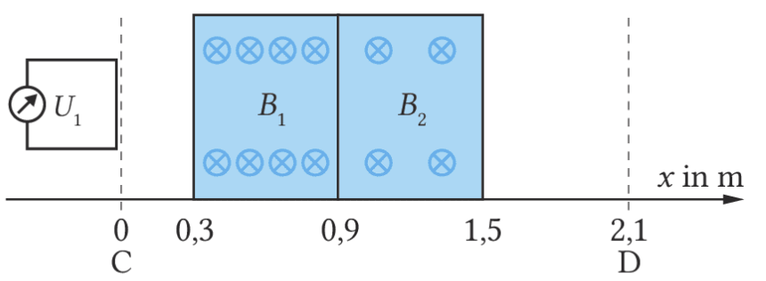
Es gilt (B_1=0{,}60\,\mathrm T), (B_2=0{,}30\,\mathrm T), (n=100), Seitenlänge (a=0{,}30\,\mathrm m) und (v=0{,}20\,\mathrm{m/s}). Der rechte Spulenrand startet bei (C).
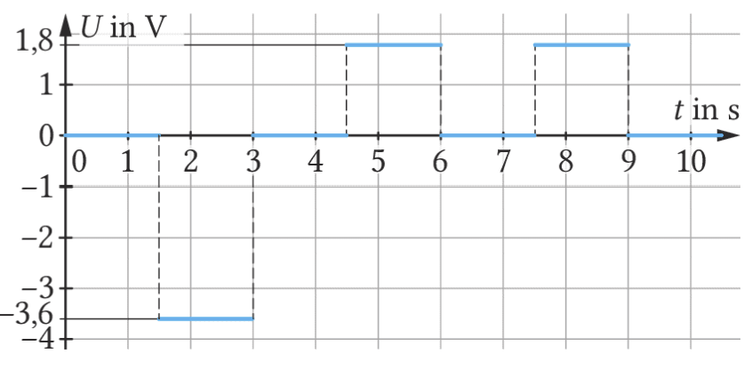
Die Umschaltzeiten sind (t_1=1{,}5\,\mathrm s), (t_2=3{,}0\,\mathrm s), (t_3=4{,}5\,\mathrm s), (t_4=6{,}0\,\mathrm s), (t_5=7{,}5\,\mathrm s), (t_6=9{,}0\,\mathrm s) und (t_7=10{,}5\,\mathrm s).
Es gilt stückweise: (0\,\mathrm V), (-3{,}6\,\mathrm V), (0\,\mathrm V), (+1{,}8\,\mathrm V), (0\,\mathrm V), (+1{,}8\,\mathrm V), (0\,\mathrm V). Beim Übergang von (B_1) nach (B_2) nimmt der Fluss ab, obwohl die Spule vollständig von einem Feld durchsetzt bleibt.
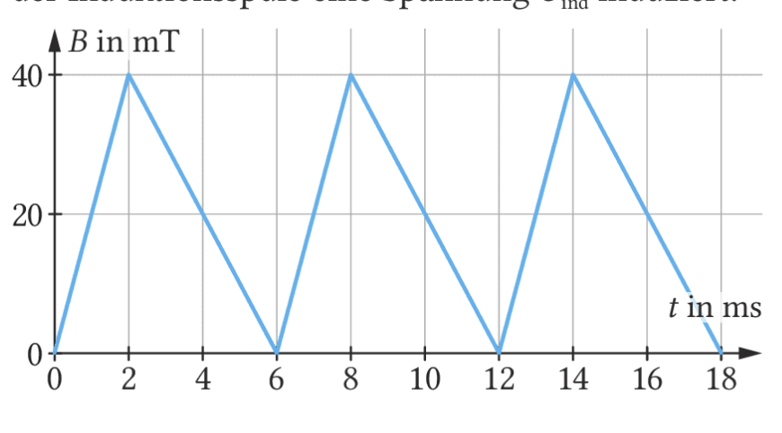
Eine runde Induktionsspule besitzt (n=200) Windungen und den Durchmesser (d=3{,}2\,\mathrm{cm}). Ihre Achse liegt parallel zur Achse der Feldspule.
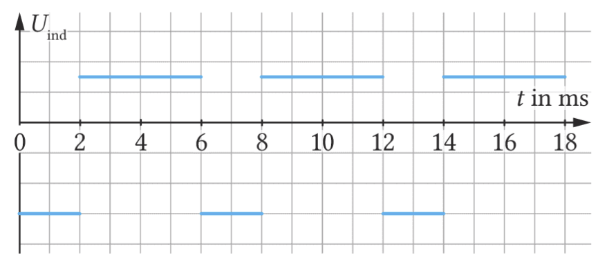
Mit \(A=\pi(d/2)^2\approx8{,}0\cdot10^{-4}\,\mathrm{m^2}\) gilt beim Anstieg \(\Delta B/\Delta t=+20\,\mathrm{T/s}\), also \(U_\mathrm{ind}\approx-3{,}2\,\mathrm V\). Beim Abfall ist \(\Delta B/\Delta t=-10\,\mathrm{T/s}\), also \(U_\mathrm{ind}\approx+1{,}6\,\mathrm V\).
Wegen \(U_\mathrm{ind}\sim nA\sim nd^2\) führen \(2n\) und \(d/2\) insgesamt zum Faktor \(2\cdot(1/2)^2=1/2\). Der qualitative Verlauf bleibt gleich, die Beträge halbieren sich. Eine linear veränderliche Spannung erfordert eine quadratische Funktion \(B(t)\), weil \(U_\mathrm{ind}\sim-\dot B(t)\) gilt.
Auch in einer massiven Metallplatte können Induktionsströme entstehen. Ändert sich der magnetische Fluss in einem Bereich der Platte, bilden sich geschlossene Strombahnen. Weil sie an Wasserwirbel erinnern, heißen sie Wirbelströme.
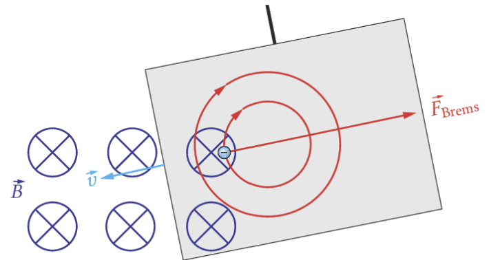
Schwingt eine massive Metallplatte in ein Magnetfeld hinein, wächst der Fluss in Teilen der Platte. Die Wirbelströme erzeugen nach Lenz ein Magnetfeld gegen diese Änderung. Beim Herausbewegen kehrt sich ihre Richtung um, doch die magnetische Kraft bremst die Bewegung erneut.
Eine geschlitzte Platte wird deutlich schwächer gebremst: Die Schlitze unterbrechen große geschlossene Strombahnen und verkleinern dadurch die Wirbelströme.
Die verlorene Bewegungsenergie verschwindet nicht. Der elektrische Widerstand des Metalls wandelt sie in innere Energie um.
Bei Achterbahnen und Freifalltürmen bewegen sich Metallplatten relativ zu starken Permanentmagneten. Die induzierten Wirbelströme bremsen die Wagen. Das System benötigt für die Bremswirkung keine äußere Stromversorgung und funktioniert auch bei Feuchtigkeit.
Ein Stabmagnet fällt aus demselben Grund in einem ungeschlitzten Kupferrohr deutlich langsamer als in einem längs geschlitzten Rohr.
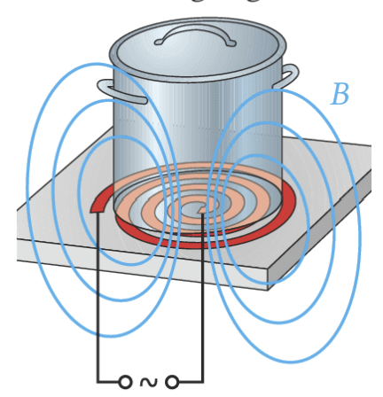
Unter der Kochzone liegt eine flache Kupferspule. Wechselstrom mit etwa \(25\) bis \(50\,\mathrm{kHz}\) erzeugt ein schnell veränderliches Magnetfeld. Im ferromagnetischen Topfboden entstehen Wirbelströme; zusätzlich trägt die fortlaufende Ummagnetisierung zur Erwärmung bei.
Die Glaskeramik wird nicht direkt durch Induktion geheizt, sondern hauptsächlich durch den heißen Topf. Deshalb bleibt nach dem Abschalten weniger Nachwärme als bei einer klassischen Kochplatte.
Wirbelströme wirken der verursachenden Flussänderung entgegen. Je nach Aufbau nutzt man ihre magnetische Bremskraft oder die entstehende innere Energie.
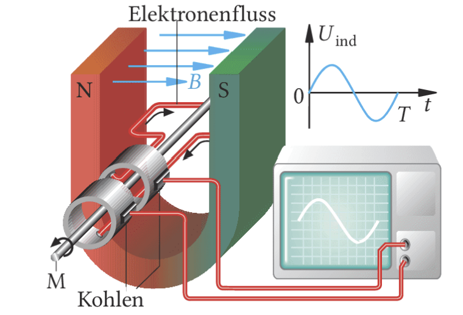
Eine Leiterschleife rotiert gleichförmig in einem homogenen Magnetfeld. Ihre Fläche bleibt gleich, aber ihre Orientierung und damit die wirksame Fläche ändern sich fortlaufend. Nach jeder halben Umdrehung vertauscht sich die Polung. Am Oszilloskop erscheint eine periodische Wechselspannung.
In Kraftwerken ruht häufig die Induktionsspule, während im Inneren ein Magnet rotiert. Das ändert nichts am Prinzip: Entscheidend ist die periodische Änderung des magnetischen Flusses. Auch der Fahrraddynamo arbeitet nach diesem Grundgedanken.
Für eine gleichförmige Drehung wird der Winkel im Bogenmaß beschrieben. Die Ableitung des Kosinusverlaufs des Flusses liefert den Sinusverlauf der Spannung.
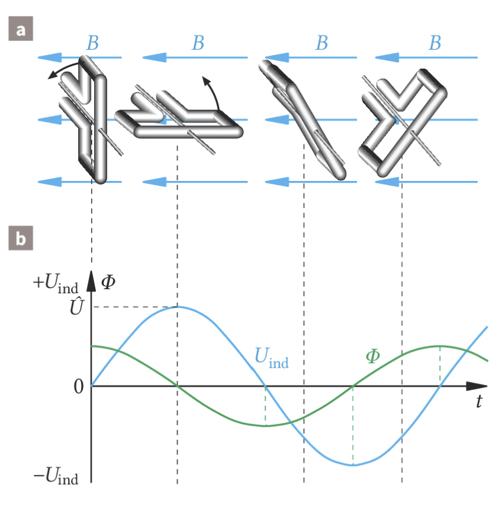
Steht die Spulenfläche senkrecht zu den Feldlinien, ist der Fluss maximal, ändert sich in diesem Augenblick aber nicht: \(U_\mathrm{ind}=0\). Steht die Fläche parallel zu den Feldlinien, ist der Fluss null, seine Änderungsrate aber maximal: Der Spannungsbetrag ist maximal.
\(\hat U\) ist die Scheitelspannung. Eine höhere Drehfrequenz erhöht zugleich Frequenz und Scheitelwert der Spannung.
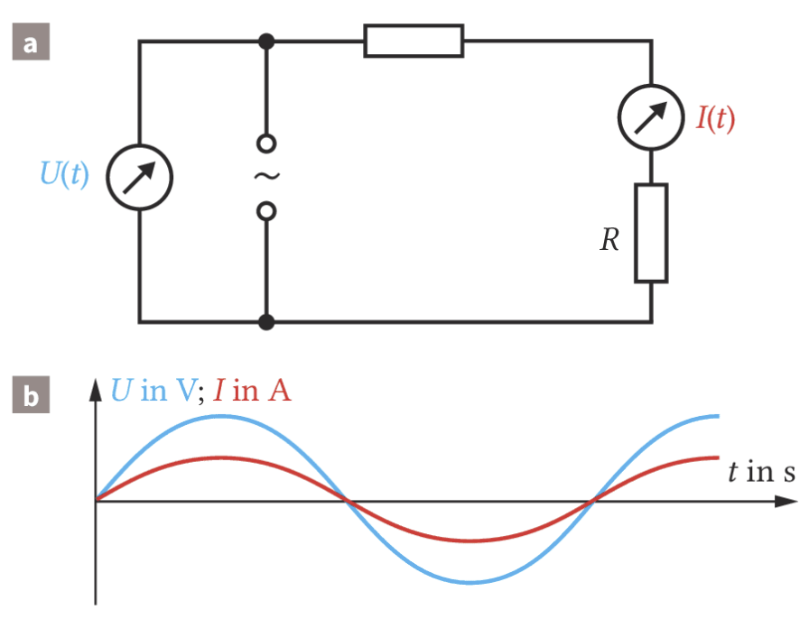
Bei einem reinen ohmschen Widerstand folgen Stromstärke und Spannung einander ohne zeitliche Verzögerung. Beide wechseln gleichzeitig ihr Vorzeichen und erreichen gleichzeitig ihre Extremwerte.
Ein Transformator besitzt zwei Spulen, die über ein gemeinsames, zeitlich veränderliches Magnetfeld gekoppelt sind. Die Wechselspannung an der Primärspule erzeugt eine Flussänderung; diese induziert in der Sekundärspule eine Spannung. Induktives Laden nutzt dieselbe Kopplung über einen Luftspalt.
Eine quadratische Spule mit \(A=15\,\mathrm{cm^2}\) und \(n=100\) rotiert in einem homogenen Feld mit \(B=40\,\mathrm{mT}\) und \(f=25\,\mathrm{Hz}\). Zu Beginn steht die Spulenfläche senkrecht zu den Feldlinien.
Es gilt (f=50\,\mathrm{Hz}) und (hat U=10\,\mathrm V), wobei (U(0)=0) und die Spannung zunächst steigt.
Für beide Kurse wichtig sind der Ein- und Ausschaltversuch, die Gegenwirkung nach Lenz, die Induktivität und \(U_\mathrm{ind}=-L\dot I\). Die Herleitung der Spuleninduktivität, Exponentialfunktionen und quantitative Diagrammauswertungen sind LF-only.
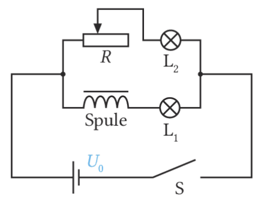
Zwei baugleiche Lämpchen werden parallel an eine Gleichspannungsquelle angeschlossen. Vor \(L_1\) liegt eine Spule mit geschlossenem Eisenkern, vor \(L_2\) ein so angepasster Widerstand, dass beide Lampen im stationären Zustand gleich hell leuchten.
Beim Schließen des Schalters leuchtet \(L_2\) sofort, \(L_1\) dagegen zeitlich verzögert. Ohne Eisenkern ist die Verzögerung kaum noch sichtbar. Der Eisenkern verändert nicht den Drahtwiderstand, sondern verstärkt das Magnetfeld und damit die Selbstinduktion.
Beim Einschalten steigt die Stromstärke in der Spule. Dadurch wachsen magnetische Flussdichte und magnetischer Fluss durch die eigenen Windungen. Nach dem Lenz'schen Gesetz ist die entstehende Selbstinduktionsspannung der äußeren Spannung entgegengerichtet. Sie bremst den Stromanstieg, solange sich \(I\) ändert.
Die Induktivität \(L\) kennzeichnet, wie stark eine Spule auf eine Stromänderung reagiert. Das Minuszeichen beschreibt die Gegenwirkung nach Lenz.
Für eine lange Spule bleiben Geometrie und Permeabilität konstant. Nur \(I(t)\) und damit der magnetische Fluss ändern sich.
Eine Verdopplung von \(n\) vervierfacht \(L\). Eine größere Querschnittsfläche oder ein ferromagnetischer Kern erhöhen \(L\); eine größere Spulenlänge verringert sie. Reale Spulen besitzen zusätzlich einen ohmschen Widerstand.
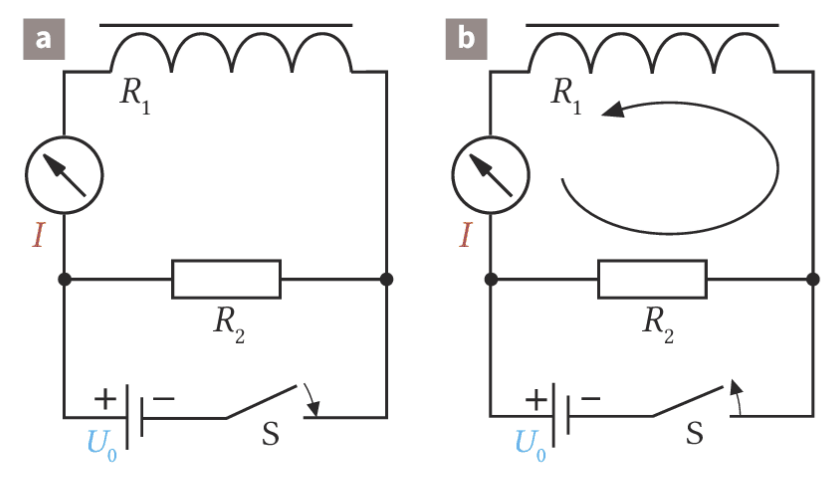
Beim Einschalten ist \(I(0)=0\). Deshalb fällt zunächst fast die gesamte äußere Spannung als Gegenspannung an der Spule ab. Mit wachsender Stromstärke wird ihre Änderungsrate kleiner. Langfristig verschwindet die Selbstinduktionsspannung und der Strom nähert sich dem durch den Widerstand bestimmten Endwert.
Beim Ausschalten nimmt der Strom ab. Nun kehrt sich die Polung der Selbstinduktionsspannung um: Die Spule versucht, den bisherigen Stromfluss aufrechtzuerhalten. Je schneller der Strom unterbrochen wird, desto größer kann die Spannung werden.
Der Endwert hängt nicht von \(L\) ab. Die Induktivität bestimmt, wie schnell er erreicht wird.
Die folgenden Gleichungen erklären quantitativ die Kurvenformen beim Ein- und Ausschalten.
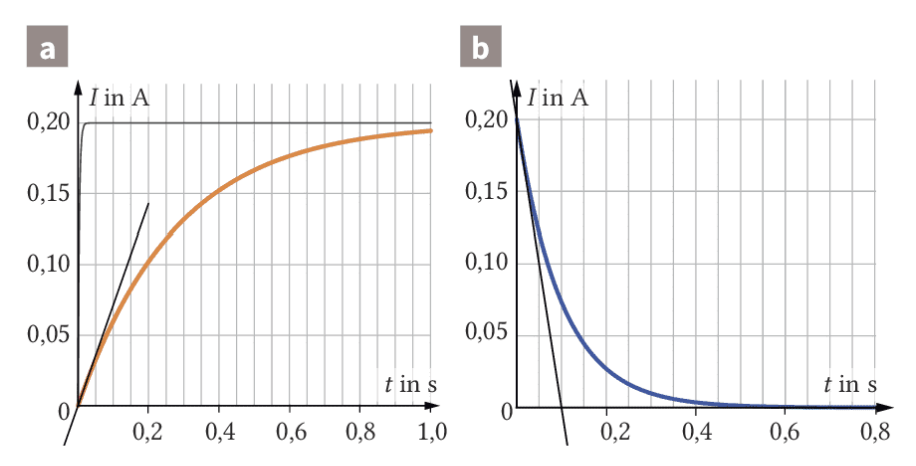
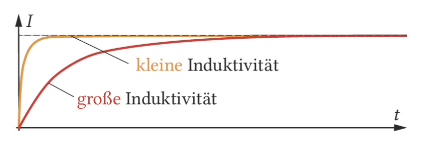
Sicherheit: Wird ein Spulenstrom abrupt unterbrochen, kann \(|\dot I|\) sehr groß werden. Die dadurch entstehende Induktionsspannung kann Funkenüberschläge verursachen und Bauteile beschädigen. Eine Glimmlampe mit einer Zündspannung von \(80\,\mathrm V\) kann deshalb kurz aufleuchten, obwohl die ursprüngliche Quelle nur \(2\,\mathrm V\) liefert.
Das Basisfach beschreibt Selbstinduktion an einem Beispiel. Hier bestimmst du \(L\) aus Messdaten, Anfangstangenten und Spulendaten und wertest Ein- und Ausschaltvorgänge quantitativ aus.
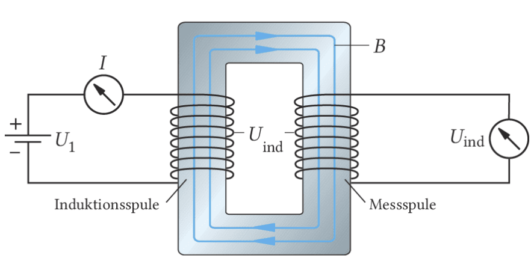
In der Selbstinduktionsspule überlagern sich äußere Spannung, ohmscher Spannungsabfall und Selbstinduktionsspannung. Eine isoliert darüber gewickelte, baugleiche Messspule wird vom gleichen zeitlich veränderlichen Fluss durchsetzt, führt aber keinen Erregerstrom. An ihr lässt sich \(U_\mathrm{ind}\) direkt messen.
Bei linearer Stromänderung ist \(\dot I\) konstant. Dann ist auch die Induktionsspannung konstant und \(L\) kann aus dem Quotienten von Spannungsbetrag und Stromänderungsrate bestimmt werden.
Beispiel: Aus \(|U_\mathrm{ind}|=0{,}36\,\mathrm{mV}\) und \(|\dot I|=1{,}1\,\mathrm{A/s}\) folgt \(L\approx0{,}33\,\mathrm{mH}\).
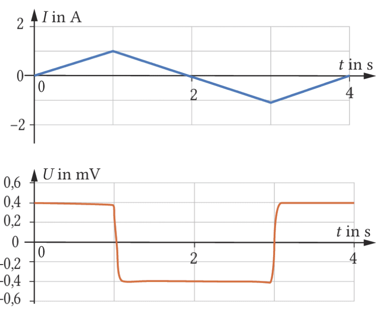
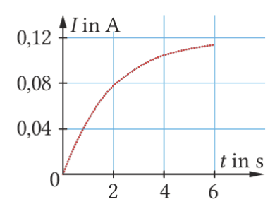
Erkläre den Verlauf von \(I(t)\). Bestimme die induzierte Spannung bei \(t=0\), den ohmschen Widerstand der Spule und ihre Induktivität. Nutze für \(L\) die Anfangstangente.
Beide Kurse können deuten, dass die beim Ausschalten verfügbare Energie zuvor im Magnetfeld gespeichert war. Die Herleitung, \(E_\mathrm{mag}=\tfrac12LI^2\) und die Energiedichte gehören nach Bildungsplan zur LF-Vertiefung.
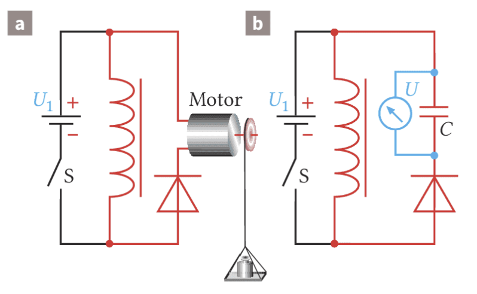
Eine stromdurchflossene Spule baut ein Magnetfeld auf. Wird die Spannungsquelle getrennt, kann der weiterfließende Strom noch einen Motor antreiben, ein Wägestück anheben oder einen Kondensator laden. Die dafür notwendige Energie kann nur aus dem zuvor aufgebauten Magnetfeld stammen.
Eine größere Stromstärke oder eine größere Induktivität führt zu mehr gespeicherter Energie. Der Eisenkern erhöht \(L\) und kann deshalb die beobachtbare Wirkung deutlich verstärken.
Nach dem Abschalten liefert die Selbstinduktionsspannung die momentane Leistung. Weil \(\dot I<0\), ist die abgegebene Leistung positiv.
Die Energie hängt quadratisch von der Stromstärke ab. Eine Verdopplung von \(I\) vervierfacht \(E_\mathrm{mag}\).
Die Energiedichte gibt an, wie viel magnetische Energie pro Volumen im Feld steckt.
Eine Spule mit \(L=8{,}0\,\mathrm{mH}\) führt vor dem Abschalten \(I=0{,}20\,\mathrm A\). Danach lädt sie einen Kondensator mit \(C=0{,}50\,\mathrm{\mu F}\) auf \(U=25\,\mathrm V\).
Der Bildungsplan verlangt in beiden Kursen, Ursache und Struktur elektromagnetischer Felder anhand der Aussagen der Maxwell-Gleichungen im Überblick zu beschreiben. Die vier Aussagen sind deshalb kein optionaler Exkurs.
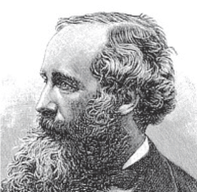
Zusammen mit der Lorentzkraft erfassen die Maxwell-Gleichungen die klassische Elektrodynamik. Sie sind für elektrische und magnetische Felder das, was die Newton'schen Axiome für die Mechanik sind: ein kleiner Satz grundlegender Aussagen, aus denen sich viele Einzelgesetze ableiten lassen.
Die mathematische Behandlung als partielle Differenzialgleichungen liegt deutlich über dem Schulniveau. Im Unterricht entscheidend ist, dass du jede Gleichung in Feldliniensprache erklären und einem bekannten Phänomen zuordnen kannst.
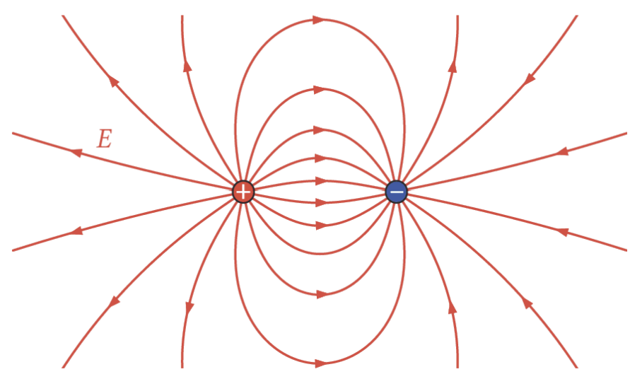
Elektrische Ladungen sind Quellen und Senken des elektrischen Feldes. Feldlinien beginnen an positiven Ladungen und enden an negativen Ladungen. Je größer die eingeschlossene Ladung ist, desto größer ist der elektrische Fluss durch eine geschlossene Oberfläche.
Positive Ladungen sind Quellen, negative Ladungen sind Senken des elektrischen Feldes.
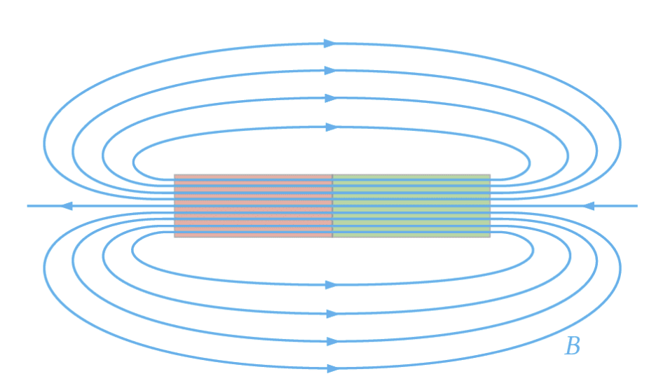
Magnetische Felder besitzen keine Quellen und Senken. Die Feldlinien eines Magneten verlaufen außerhalb vom Nord- zum Südpol und im Inneren zurück. Sie bilden stets geschlossene Linien. Teilt man einen Magneten, entstehen zwei neue Dipole und keine isolierten Magnetpole.
Es gibt keine beobachteten magnetischen Monopole; magnetische Feldlinien sind geschlossen.
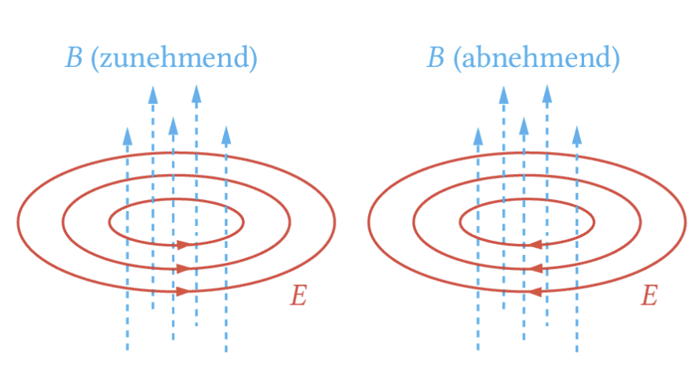
Ein sich änderndes Magnetfeld ist von einem elektrischen Wirbelfeld umgeben. Dieses elektrische Feld existiert auch ohne Draht; ein Leiter macht seine Wirkung lediglich als Induktionsspannung oder Induktionsstrom messbar.
Bewegungsinduktion durch die Lorentzkraft ist eine zweite Induktionsursache. Für die vollständige Elektrodynamik benötigt man deshalb Maxwell-Gleichungen und Lorentzkraft.
Ein zeitlich veränderliches Magnetfeld erzeugt ein elektrisches Wirbelfeld.
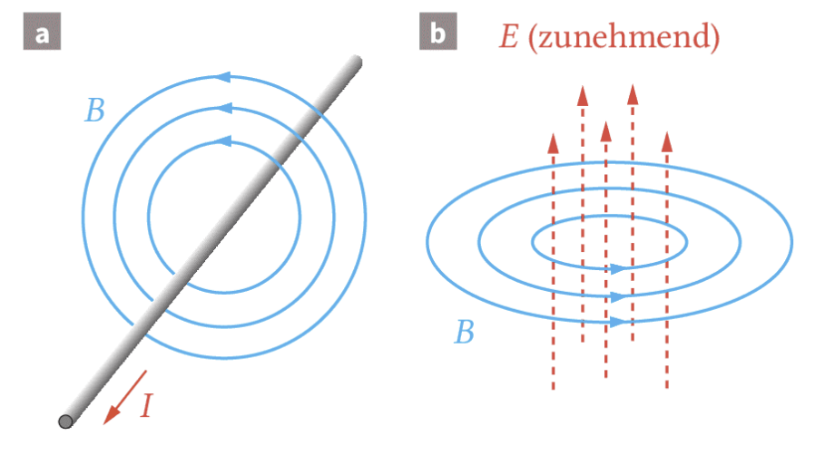
Elektrische Ströme sind von magnetischen Wirbelfeldern umgeben. Maxwell ergänzte: Auch ein zeitlich veränderliches elektrisches Feld erzeugt ein Magnetfeld. Beim Laden eines Kondensators fließt zwischen den Platten kein Leitungsstrom, dennoch wächst dort das elektrische Feld und damit entsteht ein Magnetfeld.
Maxwell bezeichnete den zusätzlichen Beitrag als Verschiebungsstrom. Diese Ergänzung ermöglicht die Vorhersage elektromagnetischer Wellen.
Elektrische Ströme und zeitlich veränderliche elektrische Felder erzeugen magnetische Wirbelfelder.
Die Symbolik mit Divergenz und Rotation ist nicht als Rechenstoff gedacht. Sie zeigt kompakt, dass die vier verbalen Aussagen tatsächlich vier Gleichungen sind.
\(\rho\) bezeichnet die Ladungsdichte und \(\vec j\) die Stromdichte. Die ersten beiden Gleichungen beschreiben Quellen; die letzten beiden beschreiben Wirbelfelder.
Ein veränderliches elektrisches Feld erzeugt ein magnetisches Feld; dessen Veränderung erzeugt wiederum ein elektrisches Feld. Die gekoppelte Störung kann sich selbstständig durch den Raum ausbreiten. Licht ist eine elektromagnetische Welle.
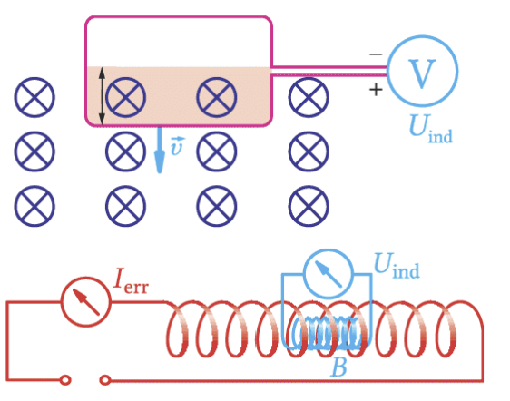
Induktion beruht auf einer Änderung des magnetischen Flusses oder auf der Lorentzkraft bei bewegten Leitern. Das Lenz'sche Gesetz sichert die Energieerhaltung. Generatoren, Wirbelströme und Selbstinduktion sind Anwendungen desselben Grundgedankens. Die Maxwell-Gleichungen ordnen elektrische und magnetische Quellen- und Wirbelfelder in ein gemeinsames System ein.
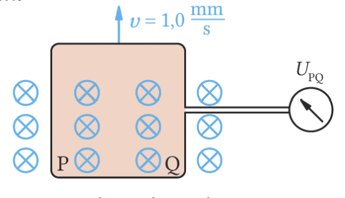
Ein quadratischer Rahmen mit Kantenlänge \(6{,}0\,\mathrm{cm}\) und \(500\) Windungen befindet sich teilweise in einem Feld mit \(B=2{,}1\,\mathrm{mT}\). Die Feldlinien zeigen in die Zeichenebene, der Rahmen wird mit \(1{,}0\,\mathrm{mm/s}\) nach oben gezogen.
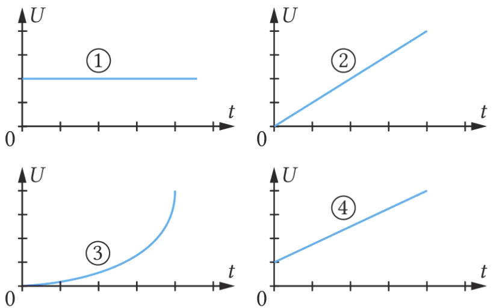
Diese Aufgaben verbinden Energie, Produktregel und die Umkehrung des Induktionsgesetzes und gehören zur vertieften quantitativen Auswertung.
Ein quadratischer Rahmen mit Seitenlänge \(50\,\mathrm{cm}\) wird in \(0{,}50\,\mathrm s\) vollständig in ein homogenes Feld mit \(B=2{,}0\,\mathrm T\) geschoben. Er ist über \(R=0{,}20\,\Omega\) geschlossen.
In einer \(50\,\mathrm{cm}\) langen Feldspule mit \(n_F=10^4\) und \(I_F=2{,}0\,\mathrm A\) befindet sich ein quadratischer Rahmen mit \(1000\) Windungen und \(10\,\mathrm{cm}\) Seitenlänge.
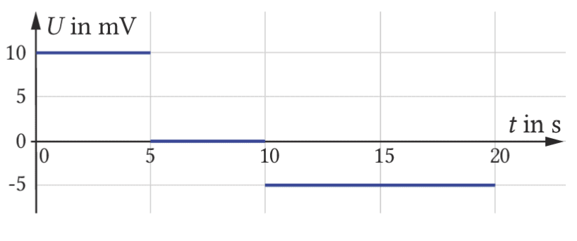
Ein quadratischer Drahtrahmen hat \(100\) Windungen und \(5{,}0\,\mathrm{cm}\) Seitenlänge. Er steht stets senkrecht zu den Feldlinien.
Eine Spule besitzt \(L=8{,}0\,\mathrm H\), \(R=15\,\Omega\) und wird an \(U_0=6{,}0\,\mathrm V\) angeschlossen.
Grundlage sind die bereitgestellten Kapitel aus Dorn/Bader: Physik Kursstufe, Kapitel 3 „Induktion“, der Bildungsplan für das Basisfach und der Bildungsplan für das Leistungsfach. Die Abbildungen stammen aus dem bereitgestellten Unterrichtsmaterial.
Warum benötigt eine Relaisspule häufig eine Schutzdiode? Wie lässt sich aus den Maxwell-Gleichungen die Ausbreitung elektromagnetischer Wellen verstehen? Und weshalb ist die in einem Magnetfeld gespeicherte Energie nicht an einen bestimmten Stoff gebunden?